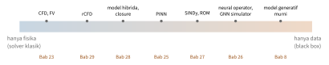

Bab 0
Peta Perjalanan
Sebelum masuk ke materi, ada baiknya melihat peta besarnya dulu: mata kuliah apa saja yang dilalui, dalam urutan apa, dan bagaimana semuanya tersusun menjadi buku ini.
Empat semester
Tabel 1 menyusun mata kuliah menurut semester ketika saya mengikutinya. Urutan bab di buku tidak persis mengikuti urutan waktu. Bab disusun menurut alur gagasan: fondasi lebih dulu, lalu deep learning, lalu simulasi. Tabel ini berguna bagi pembaca yang ingin membaca buku ini sambil mengikuti kuliah serupa.
| Semester | Mata kuliah | Bab |
|---|---|---|
| Musim dingin 2024/25 | Deep Learning and Neural Nets I | 5 |
| LSTM and Recurrent Neural Nets | 6 | |
| Computer Vision | 7 | |
| Machine Learning: Supervised Techniques | 1 | |
| Control Systems | 15 | |
| Production Automation Systems | 15 | |
| Optimum and Adaptive Signal Processing Systems | 14 | |
| AI in Society, AI and Law I | 31 | |
| Musim panas 2025 | Deep Learning and Neural Nets II | 8 |
| Deep Reinforcement Learning | 12 | |
| Machine Learning: Unsupervised Techniques | 4 | |
| Machine Learning and Pattern Classification | 4 | |
| Statistical Learning Theory | 1 | |
| Introduction to Autonomous Vehicles | 17 | |
| Introduction to Robotic Systems | 17 | |
| Learning from User-generated Data | 30 | |
| Introduction to Genetics; Genome Analysis and Transcriptomics | 18 | |
| Structural Bioinformatics | 20 | |
| AI in Life Sciences | 19 | |
| Deep Learning for Medical Imaging | 21 | |
| Robopsychology; Technology and Society; AI and Law II | 31 | |
| Musim dingin 2025/26 | Machine Learning: Advanced Techniques | 11 |
| Probabilistic Models | 10 | |
| AI and Visualization | 13 | |
| Machine Learning: Basic Techniques | 1 | |
| Reinforcement Learning | 12 | |
| Numerical Methods in Fluid Mechanics | 22, 23 | |
| Computational Physics I | 24 | |
| Optimum and Adaptive Signal Processing Systems (latihan) | 14 | |
| Radar System Engineering (latihan) | 14 | |
| Pervasive Computing: Systems and Environments; Design and Development | 16 | |
| KS Operations Research | 3 | |
| Natural Language Processing | 6 | |
| Communicating AI | 31 | |
| Musim panas 2026 | Introduction to AI | 3 |
| Deep Learning: Geometric Techniques | 9 | |
| Numerical Optimization for AI | 2 | |
| Tugas akhir: recurrence CFD | 29 |
Bab-bab tentang scientific machine learning (Bab 25, Bab 26, Bab 27 dan Bab 28) tidak berasal dari satu mata kuliah. Isinya dirangkai dari beberapa kuliah, terutama machine learning lanjut, metode numerik fluida, dan fisika komputasi, ditambah bacaan selama mengerjakan tugas akhir.
Buku ini terbagi menjadi enam bagian. Bagian I berisi fondasi: apa artinya belajar dari data, bagaimana mencari parameter terbaik, bagaimana AI klasik mencari dan merencanakan, dan bagaimana menemukan struktur tanpa label. Bagian II membahas deep learning dan persepsi, dari jaringan konvolusi sampai model generatif, reinforcement learning, dan explainable AI. Bagian III turun ke dunia sinyal dan sistem fisik: estimasi dan filter, radar, kendali, komputasi pervasif, dan robot. Bagian IV masuk ke ilmu hayati: genom, molekul dan obat, protein, dan citra medis. Bagian V membahas AI untuk simulasi fisika, bidang tugas akhir saya. Bagian VI menutup dengan sistem rekomendasi, sisi manusia dan hukum, dan perkembangan AI terbaru.
Beberapa mata kuliah di tabel berada di luar kebutuhan kurikulum. Semuanya tetap masuk ke buku, sebab cerita AI tidak lengkap tanpa robot yang bergerak, rekomendasi yang kita terima setiap hari, dan molekul yang dirancang dengan bantuan mesin.
Mengapa simulasi
Simulasi fisika seperti computational fluid dynamics (CFD) menyelesaikan persamaan diferensial parsial di jutaan sel. Hasilnya akurat, tetapi mahal: satu kasus bisa berjalan berhari-hari di klaster komputer. Machine learning menawarkan jalan pintas. Ia belajar dari hasil simulasi sebelumnya, lalu menebak hasil baru dalam hitungan detik. Masalahnya, model yang hanya belajar dari data tidak tahu apa-apa tentang kekekalan massa atau energi. Ia bisa menghasilkan aliran yang terlihat meyakinkan tetapi melanggar fisika.
Saya suka membayangkan perbedaan ini seperti dua cara memasak. Juru masak pertama mengikuti resep secara persis: takaran, suhu, waktu. Hasilnya bisa diulang, tetapi lambat, karena setiap langkah harus ditimbang. Juru masak kedua memasak dengan lidah. Ia mencicipi, mengingat rasa masakan sebelumnya, lalu menebak. Cepat, tetapi kadang meleset jauh. Juru masak terbaik memakai keduanya: resep menjaga agar masakan tidak gagal total, lidah membuatnya cepat dan luwes. Solver CFD adalah resep, machine learning adalah lidah, dan physics-informed machine learning adalah usaha memakai keduanya sekaligus.
Di antara dua ujung itu terbentang spektrum yang lebar. Gambar 1 menempatkan pendekatan-pendekatan yang akan kita temui di sepanjang buku.

Literatur memakai beberapa nama untuk wilayah ini: scientific machine learning, physics-informed machine learning (Karniadakis dkk. 2021), atau physics-based deep learning (Thuerey dkk. 2021). Tinjauan yang khusus membahas mekanika fluida ditulis oleh Brunton, Noack, dan Koumoutsakos (2020), Vinuesa dan Brunton (2022), dan Lino dkk. (2023). Di buku ini saya memakai istilah yang lebih sederhana: AI untuk simulasi.
Tiga pintu masuk fisika
Karniadakis dkk. (2021) membedakan tiga cara memasukkan pengetahuan fisika ke dalam model pembelajaran. Pembagian ini akan muncul berulang kali, jadi ada gunanya dikenal sejak awal.
Pintu pertama adalah data. Kalau sebuah model dilatih dengan cukup banyak hasil simulasi yang benar, ia ikut meniru pola fisika yang terkandung di dalamnya. Inilah yang disebut observational bias, dan contohnya adalah neural operator yang dilatih dari ribuan solusi persamaan (Bab 26). Pintu kedua adalah arsitektur. Model bisa dirancang agar otomatis mematuhi sifat tertentu, misalnya tetap berlaku ketika sistemnya diputar atau digeser. Konvolusi, yang dengan sendirinya menghormati pergeseran (Bab 5), dan jaringan yang menghormati rotasi (Bab 9) termasuk di sini. Ini inductive bias. Pintu ketiga adalah fungsi loss. Kita menambahkan suku yang menghukum setiap pelanggaran persamaan fisika, sehingga model belajar mematuhinya selama pelatihan. Ini learning bias, dan contoh paling terkenalnya adalah PINN (Bab 25).
Setiap kali bertemu model baru di bab-bab berikutnya, ada tiga pertanyaan yang layak diajukan. Lewat pintu mana fisika masuk: data, arsitektur, atau loss? Apa yang terjadi kalau model dipakai di luar jangkauan data latihnya, misalnya untuk waktu yang lebih panjang atau geometri yang berbeda? Dan berapa biaya melatihnya dibanding biaya menjalankan solver klasik? Tiga pertanyaan ini akan menemani kita sampai akhir.
Notasi
Buku ini memakai notasi yang umum di kuliah. Vektor dicetak tebal (\(\boldsymbol{x}\)), matriks huruf besar tebal (\(\boldsymbol{W}\)), skalar huruf miring (\(x\)). Data latih ditulis \(\{(\boldsymbol{x}_n,y_n)\}_{n=1}^N\), dan parameter model ditulis \(\boldsymbol{w}\) atau \(\boldsymbol{\theta}\). Ekspektasi ditulis \(\mathbb{E}[\cdot]\), distribusi normal \(\mathcal{N}(\mu,\sigma^2)\), dan divergensi Kullback–Leibler \(\mathrm{KL}(q\,\|\,p)\). Pada bab-bab fluida, \(\boldsymbol{u}\) berarti kecepatan, \(p\) tekanan, \(\rho\) massa jenis, \(\nu\) viskositas kinematik, dan \(T\) temperatur.